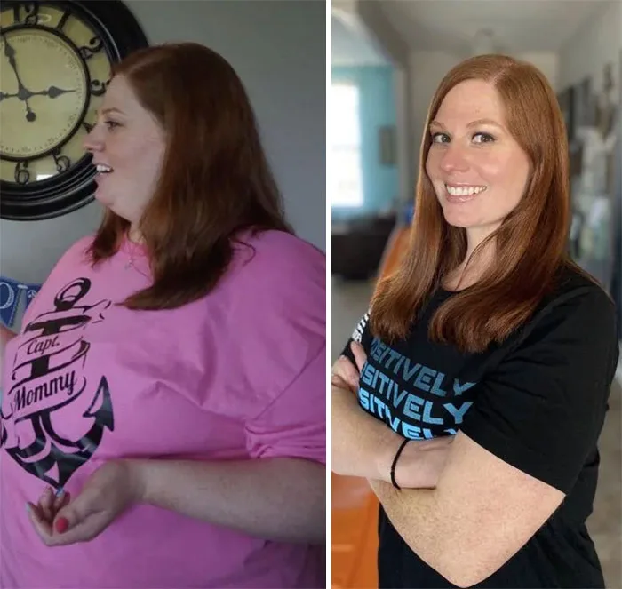

Ne mélangez jamais le sel rose avec ces 3 ingrédients faits maison si vous ne voulez pas brûler 12 kilos en 15 jours
TF1 INFO
1,64 M d'abonnés
2,3 M vues · aujourd'hui · 483 personnes regardent maintenant
Reportage de Carla Bruni, mis à jour il y a 30 minutes. Témoignages, images et réactions autour du sel rose et de ces 3 ingrédients faits maison qui font réagir des milliers de femmes en France.
37 542 commentaires
Je pensais tomber sur un reportage banal, mais les témoignages sont troublants. Le passage sur les femmes qui n'osent plus se regarder m'a vraiment touchée.

Pareil ici. Ça change des sujets superficiels, là on voit des femmes parler franchement de honte, de fatigue et du regard des autres.
Le format enquête rend le sujet beaucoup plus crédible. Les images avant/après m'ont donné envie de regarder jusqu'au bout.
J'ai 51 ans et je me suis reconnue dans presque chaque témoignage. Merci à TF1 INFO d'aborder ce sujet sans se moquer.
Le témoignage de la femme qui raconte avoir pleuré seule m'a bouleversée. On sent que le reportage parle d'un vrai problème, pas juste d'apparence.
Est-ce qu'ils expliquent vraiment ce qui se passe ? Je viens de commencer et je suis déjà accrochée.
Oui, reste jusqu'à la fin. Les dernières minutes donnent beaucoup plus de contexte.
J'ai presque fermé la vidéo au début, puis les témoignages m'ont convaincue de continuer. C'est rare que je regarde un reportage aussi long sur YouTube.
Moi aussi. Les photos et les réactions dans les commentaires m'ont donné envie de voir la suite.